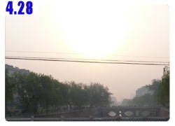
Late at night, heavy knocking on the door, “Brother, are you asleep yet? Can you open the door….,”
After several knockings on the door, the door opened.
I woke up and thought this must be a robbery. Looked up and realized it was Mr. Big Beard (the hotel owner).
Come to find out there were more people checked in and not enough blankets, so he needed to get more blankets from my room.
Looked at the watch and it was 11:40 pm. People just checking in now?
That is too pitiful. I hope I will never be in that situation looking a place to stay in the middle of night.
I then fell right back to sleep in a few seconds.
Normally the checkout time at hotels is12:00 pm or maybe 11:00 am, I thought. At 6:00 early in the morning,
as I was putting all the bags back on Dido and tying my headscarf, Mr. Big Beard walked in again.
“Are you leaving now, brother?”
Yeeeessss…. I will leave in about 5 minutes…. Why?
“Oh, nothing, someone is checking in and this room is the only room I have left”
Took a peak outside, there were a man and a woman waiting outside.
What is going on here? People either checking in in the middle of night or early in the morning.
Luckily I get up very early these days, otherwise,
I don’t think I will feel too good to be woken up early in the morning and to be kicked out of the room.
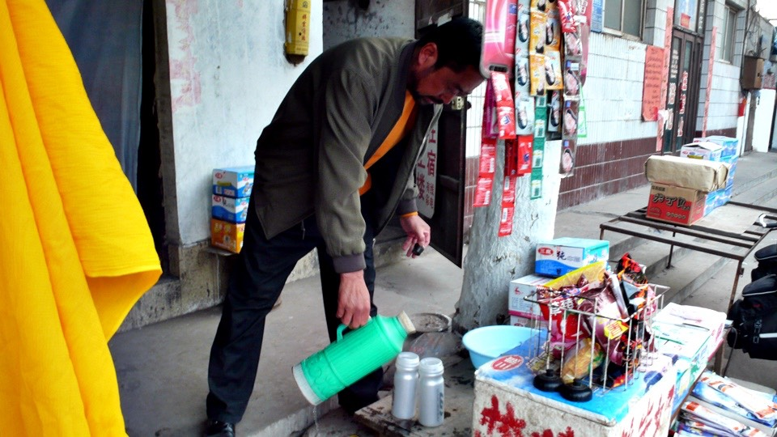
Took the bike over to Mr. Big Beard’s grocery store and asked him to fill up the water bottles for me.
I then bought 2 bags of milk for breakfast, one RMB for each bag.
Although the plastic packaging looks kind of strange, but it is very convenient to tear off one corner with my teeth and then drink from it.
The taste is not too bad, either.
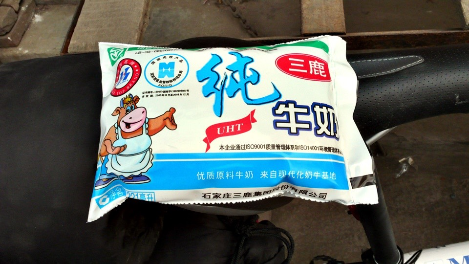
I left Handan , a mixture of modern and ancient city, in the morning.
This is the last city I stayed in Hebei Province.
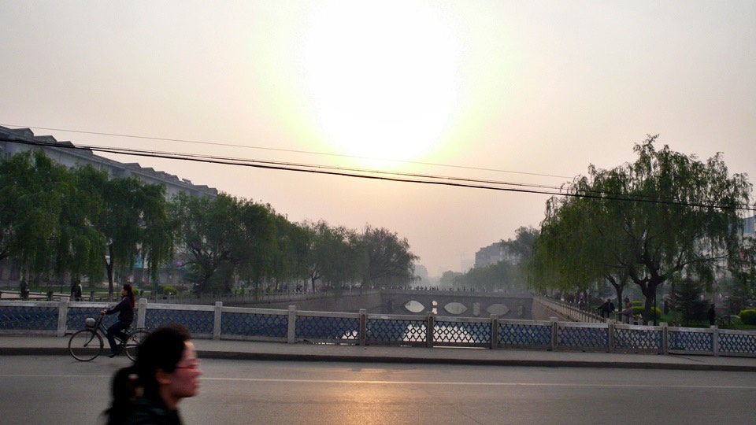
Actually by looking at the car license plate, you would know which region you are in.
When I was in Beijing, all the license plates have Jingon them.
After leaving urban area of Beijing, they became Ji , which is the abbreviation of Hebei Province.
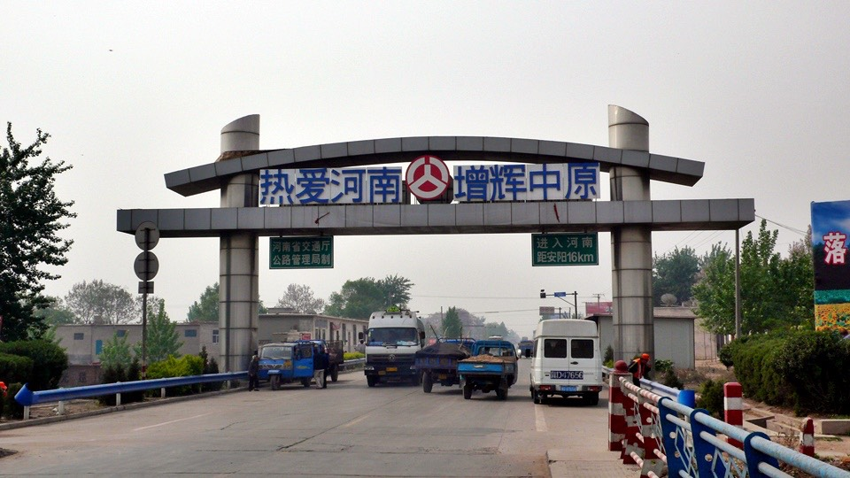
Continued riding toward south approximately 50 km is the boarder between Henan and Hebei.
There is no special sign here; just a gate indicates you are entering Henan.
Once entering Henan, most of license plates now have Yu on them, the abbreviation of Henan Province.
Not only the license plates are different, so does the dialect.
My imitated Beijing dialect is no longer useful because people here don’t use Beijing dialect, instead now is Henan dialect.
Also I can’t say I am from Beijing anymore.
Before Beijing wasn’t that far from Hebei Province and telling people that I am from Beijing didn’t draw that much attention.
But now, if I said I am from Beijing, there will be a big announcement,
“Come here! Hurry! This guy rode his bike from Beijing!”
Then there is a series of questions. How far have you ridden the bike?
For how many days?
What do you do?
Where are you going?
Where are you from?
None stop questions.
So now when I answer these questions, just like getting caught by the ticket checkers on the trains,
when they asked which stop did you get on, the standard answer is always from the previous stop.
”I am from Handan.”
But it doesn’t quite work here, either.
This is because Handan is in Hebei and I am in Henan now, so it still feels very far away.
But at least it doesn’t draw as much attention compare with before.
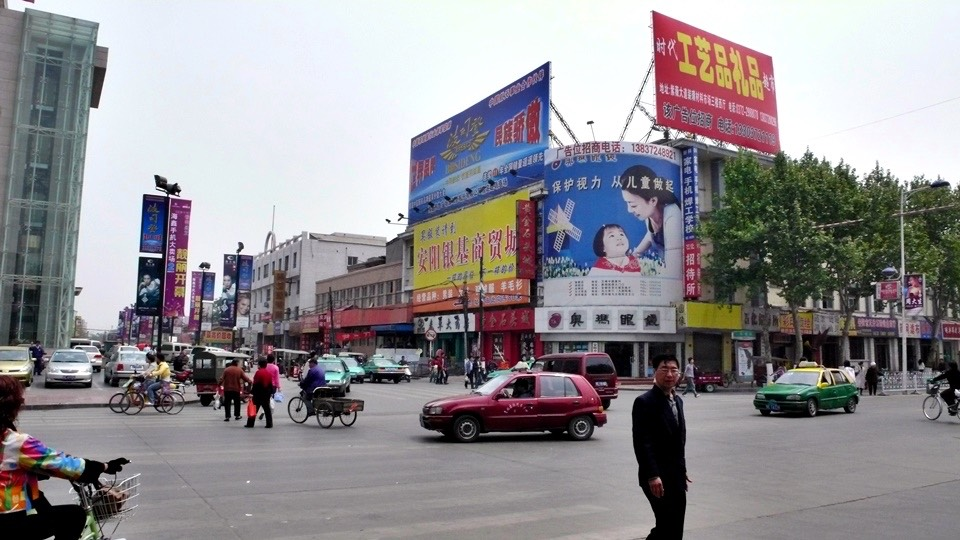
At noon, I had lunch in Anyang . Lunch was sweet bean sauce noodle and stir fry bean sprouts.
If this is the real sweet bean sauce noodle,
I don’t know what kind of sweet bean sauce noodle I have been eaten my whole life.
It didn’t come with black-colored sauce, instead it has a mixture of scramble eggs, bean curd,
tempura and lots of vegetable in broth to spread on top of noodle.
It was super delicious. I didn’t want to just have a simple lunch, so I ordered stir fry bean sprouts.
When the dish came out, it was only bean sprouts, cooked with hot pepper and some sort of unknown ingredient that tasted sour.
Although it was very good, but when I ordered bean sprouts and it came with bean sprouts only,
I didn’t know why I felt something was missing?
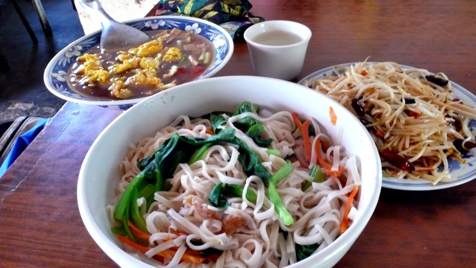
Was it because the whole Jah Jah Men only cost 3.50 RMB and a bean sprouts dish cost 4 RMB, so I expected more from it?
The restaurant owner asked me if I wanted beer? I said do you have cola?
Yes, but it’s no cold. I asked her to put a bottle of cola in the refrigerator so it would be cold when finishing lunch and some rest.
After lunch, I took a nap until 12:30 pm and then continued riding toward south.
Today, the wind was blowing against me the whole day, so the riding speed was very slow.
The speedometer fluctuated between 10 – 13 km/h.
I was riding in a slow pace, so I just followed a street vendor who rode a bike that carried many small items.
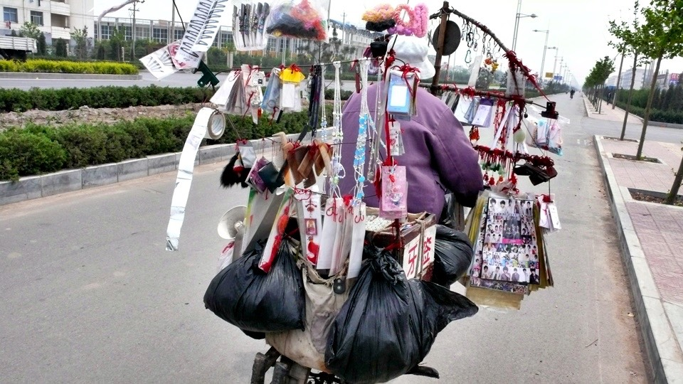
I was slowly riding the bike for whole day.
Nothing interesting or strange things happened so I started daydreaming again.
A hundred years ago, in 1907, the motor challenge from Beijing to Paris announced the upcoming automobile era.
Today, a hundred years later, I am asking myself, what kind of future are we leaving behind for our children?
A hundred years from now after we are gone, in 2107,
when people look back, what kind of reviews are they going to give us.
It has been thousand of years since human race have history.
During this time, a lot of things have happened.
Mankind has created a lot of wonderful music, arts and cuisines.
Of course we also have done a lot of idiotic things, such as wars and invading to other countries.
But looking back at the thousand years of history, which era do we really hate?
Even World War II, there are still a lot of stories people relish about.
Not to mention the fascinating stories from the era of exploration of sea, Three Kingdoms and Warring States Periods .
The only exception is “Today”.
“Today” is an ironic era. It is the first time human race promotes environment protection.
At the same time, it is the era that has destroyed our environment the most.
What are we leaving behind for our future generations a hundred years later?
Is it going to be the era where they can only see polar bear in specimens at the museums?
Is it going to be the era where they can only see Arctic through the documentary films?
Is it going to be the era with abnormal climate changes, many biological extinctions and sadness only?
In the science fiction movies, whenever they mentioned about the future, the majority of films have cars flew in the sky.
Why are the cars flying in the sky?
It must be because the roads can’t handle the traffic volume so in order to accommodate that many cars, cars have to fly.
But do we really need that many cars?
Frankly, cars are supposed to be a transportation tool.
If public transit is good, who wants to spend time to learn how to drive,
spend significant savings to buy cars, buy more and more expensive gas,
wasting time looking for parking space, paying one ticket after another one and endless maintenance on the cars?
A hundred year later, when people looking back at us,
will they give us“hatred” review because our era is the most destructive era ever in the human history.
If we don’t do anything right now to change all this,
we will have to spend a hundred times or even a thousand times more efforts to change this.
When polar bears become distinct, how much effort will it take to reproduce one?
If people ask me what will I go after finishing this bike tour?
I will probably say to Arctic and apologize to polar bears.
Because of me not doing anything causing them become distinct.
It’s not because what I have done that is killing them,
but because I have the opportunity to do something and I feel it’s not of my business.
Able to do something, but not doing anything causing harms to them.
Bystanders are guilty, too, isn’t it?
Guilty for what?
A hundred years later when they judge our era.
If they say the Earth becomes the way it is because of these people.
These people should be hated, condemned and even cursed.
Then I think we are all need to share this responsibility.
I remembered when I was in the military service. At the beginning of training,
I was a rookie. I saw several squad leaders were disassembling over a hundred guns before delivering to them other units.
While these squad leaders were chatting and disassembling the guns, a commander walked in and said
“You idiots, how long is this going to take? Why don’t you gather the soldiers to help?
One soldier per gun and this will be taking care of in 3 minutes.”
Those squad leaders were actually doing something and why did they get yelled at?
Was it because the method they did it with was incorrect or they had wrong attitude or wrong approach?
Some might said
“Deray, you stupid idiot. Do you think you can stop global warming by riding the bike by yourself?
It will be more effective if I keep my refrigerator door opened!”
The CEO of General Motor or Ford might say,
“Hey, what is this Taiwanese guy doing? Who does he think he is? Does he think he can influence automobile industry?”
Of course, one person is definitely not enough and I never though that I can save the Earth by myself.
But if by participating this campaign can influence more people want to ride bikes.
Let Taiwan become a better environment for bicyclists.
Let the whole world know that Taiwan is not a “Greed Island”, but a “Green Island”.
Let the future generations have an opportunity to see a live polar bear.
Let the children can have a dream to become an Arctic explorer, not an Arctic archaeologist.
Time flies when your mind is wondering all over the places.
Now its’ 4:00 pm and I have just arrived in a city.
I looked up the sign, it is a place called Hebi and I couldn’t find it on the map.
My knees were getting sore.
Even though time flies when you are daydreaming, but that doesn’t make the distance short and riding easier.
I saw a big sign said “Lodging”, so I walked over there with my bike and checked the price.
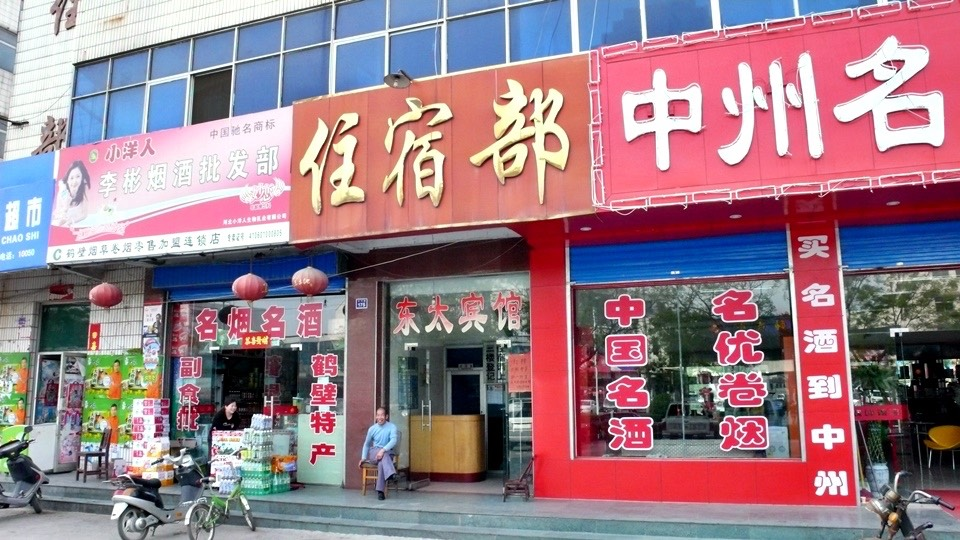
The response is no longer in the familiar Beijing dialect, but the thick Henan dialect.
Wait until I master this dialect and then I can pretend I am from Henan.
The lady from the counter asked me where I came from.
I said I started from Handan. She asked how far was it?
Looked at the speedometer, it indicated 110 km.
Told her exactly that and she was very happy and asked me if I was tired? Need to rest?
And then show me the room.
This is a European-class hotel. Clean single bed, specious room, a color TV with cable, even a sofa,
a console table and AC and heating unit.
Not to mention the chamber-pot sitting in the corner.
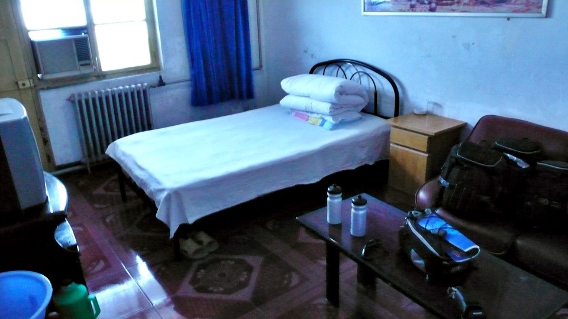
This is best room I have stayed in so far and I was worried if it’s too expensive.
The old lady said that since I was such a brave soul riding bike all the way from Handan to here,
she can charge me only 20 RMB. Convert to NT that is less than 100 NT.
And there is a free public shower room!
I dropped everything and picked up my dirty clothes along with towel and soap and rushed to the shower room.
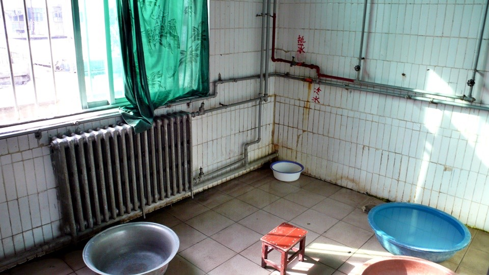
Wow! It is a real shower room!
Wow! There is running hot water!
Wow! It is a real shower room!
(I know I said this already, but I am just too excited.)
It has been a week since the beginning of the trip and this is the first time I could take a real and comfortable shower.
Washed and rinsed the windbreaker. This piece of clothing will be the indicator of how dirty I am.
Hopefully when I arrive in Paris, I can still tell this original color of this cloth is blue and grey.
Dinner is been taking care of at the restaurant right next to the hotel.
It is a decent restaurant, even the wait staff are wearing uniforms.
Looked at the menu, prices were ranging between 10 to 20 RMB, some are even 30 RMB.
Pricing is not the absolute, but relative.
Although the most expensive dish here is about the same price as the stir fry at the street vendor in Taiwan.
But after experienced the living standard here,
suddenly seeing a dish that costs almost one day’s allowance, I still feel it was too expensive.
I ordered a bowl of braised noodle and got a bowl of noodle soup.
Not only it has the regular noodle in there, it also had rice noodle and bean curd.
The soup is made of pork stock. This big bowl of soup was very filling and only cost 4 RMB.
At night, I watched some TV, read a book and had a good night sleep.
The old lady asked me for and ID, I told her that I left it at home and can I just write my information down?
And no problem.
I wondered if I show her my Taiwanese ID, how much is going to cost me for this comfortable room?